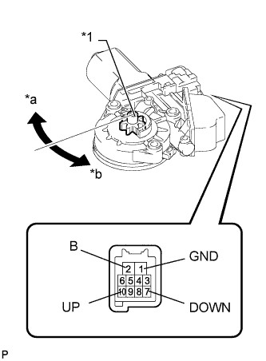
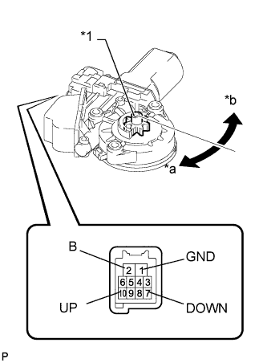

ЭЛЕКТРОДВИГАТЕЛЬ СТЕКЛОПОДЪЕМНИКА ЗАДНЕЙ ДВЕРИ > ПРОВЕРКА |
| 1. ПРОВЕРЬТЕ ЭЛЕКТРОДВИГАТЕЛЬ СТЕКЛОПОДЪЕМНИКА ЗАДНЕЙ ЛЕВОЙ ДВЕРИ В СБОРЕ |
|  |
Подайте на контакт 2(B) разъема положительное (+) напряжение аккумуляторной батареи.
Подайте на контакты 1 (GND) и 7 (DOWN) или 10 (UP) разъема отрицательное (-) напряжение аккумуляторной батареи.
Убедитесь, что шестерня электродвигателя вращается плавно, как описано ниже.
| Условия измерений | Заданные условия |
| Шестерня электродвигателя вращается по часовой стрелке (вверх) |
| Шестерня электродвигателя вращается против часовой стрелки (вниз) |
| *1 | Шестерня электродвигателя |
| *a | По часовой стрелке |
| *b | Против часовой стрелки |
| 2. ПРОВЕРЬТЕ ЭЛЕКТРОДВИГАТЕЛЬ СТЕКЛОПОДЪЕМНИКА ЗАДНЕЙ ПРАВОЙ ДВЕРИ В СБОРЕ |
|  |
Подайте на контакт 2(B) разъема положительное (+) напряжение аккумуляторной батареи.
Подайте на контакты 1 (GND) и 7 (DOWN) или 10 (UP) разъема отрицательное (-) напряжение аккумуляторной батареи.
Убедитесь, что шестерня электродвигателя вращается плавно, как описано ниже.
| Условия измерений | Заданные условия |
| Шестерня электродвигателя вращается против часовой стрелки (вверх) |
| Шестерня электродвигателя вращается по часовой стрелке (вниз) |
| *1 | Шестерня электродвигателя |
| *a | По часовой стрелке |
| *b | Против часовой стрелки |